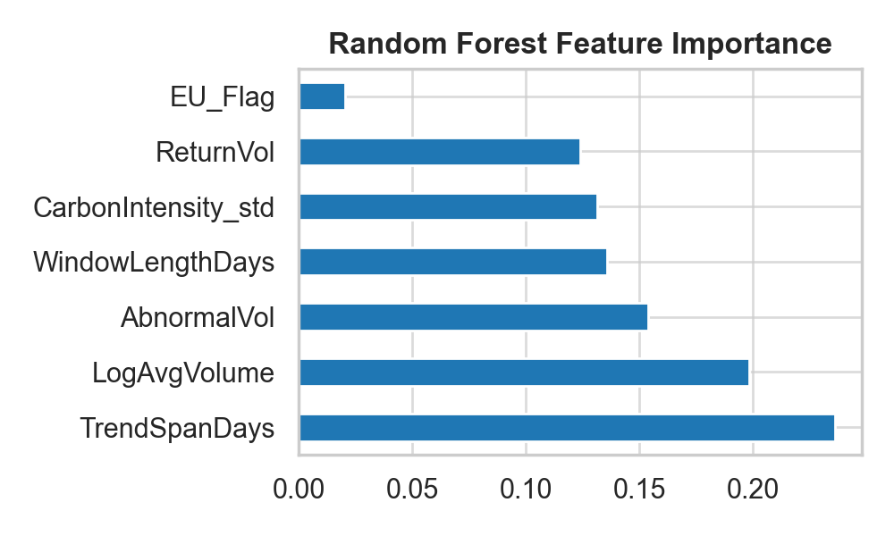
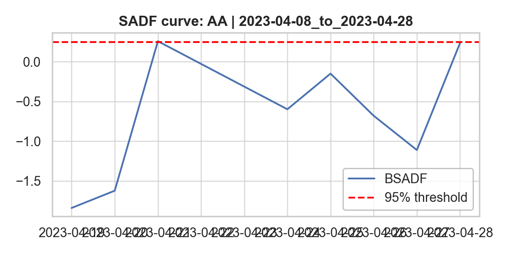
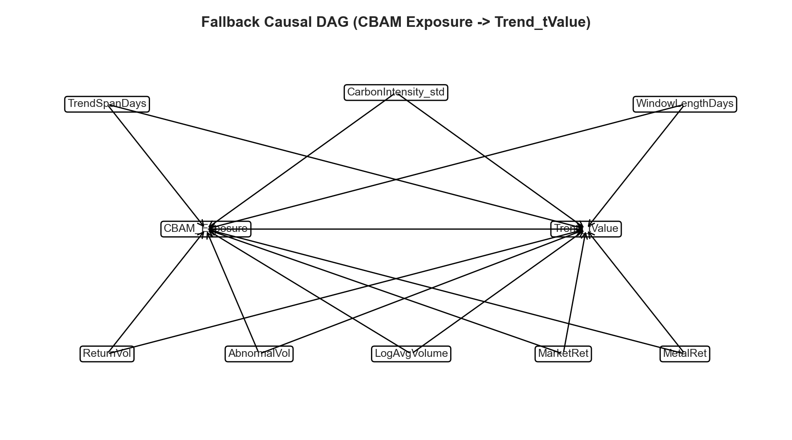

Research Question研究问题
CBAM is not only an environmental policy. It changes the expected cash-flow cost of selling carbon-intensive products into Europe. The empirical question is whether equity markets price that transition risk around major 2023 policy dates, and whether the effect is stronger for firms with higher carbon intensity. CBAM 不只是环境政策，它会改变高碳产品进入欧洲市场时的预期现金流成本。实证问题是：股票市场是否在 2023 年关键政策日期附近重新定价这种转型风险，以及这种影响是否随企业碳强度上升而增强。
\[ AR_{i,t}=f(EU_i,CI_i,MKT_t,METAL_t,\mathrm{EventWindow}_t) \]
In plain language, I compare abnormal stock returns after removing broad market and metal-sector moves. Then I check whether EU exposure and carbon intensity explain which firms react more around CBAM news. 直观来说，我先剔除整体市场和金属行业共同波动，再观察欧盟暴露和碳强度是否能解释哪些公司在 CBAM 消息附近反应更明显。
Data数据
The project combines issuer-level emissions data with event-window equity prices. The price file starts with 37 steel and aluminum tickers across EU and non-EU issuers, while the emissions file contains 40 issuer records with Scope 1, Scope 2, revenue, country, region, and sector fields. 这个项目把发行人层面的排放数据和事件窗口股票价格合并。价格文件包含 37 个欧盟与非欧盟钢铁/铝业 ticker，排放文件包含 40 条发行人记录，字段包括 Scope 1、Scope 2、收入、国家、地区和行业。
Controls控制变量
- MarketRet is a broad market control; MetalRet proxies common commodity/metal-sector moves.MarketRet 控制整体市场波动；MetalRet 代理金属/大宗商品行业共同波动。
- Carbon intensity is derived from emissions and revenue; log revenue controls for issuer scale.碳强度由排放与收入计算；收入取对数用于控制企业规模。
- Returns are winsorized in the SADF window: raw daily returns range from -7.92% to 8.77%, while winsorized returns range from -6.01% to 4.96%.SADF 窗口内对收益做缩尾：原始日收益范围为 -7.92% 至 8.77%，缩尾后为 -6.01% 至 4.96%。
Event Windows and Signals事件窗口与信号
I do not simply run one wide event window. The notebook first constructs three 2023 CBAM windows, then uses SADF-style diagnostics and trend scanning to identify local price regimes inside those windows. 我没有只跑一个宽泛事件窗口，而是先构建三个 2023 年 CBAM 政策窗口，再用 SADF 风格诊断和趋势扫描识别窗口内部的局部价格状态。
| Window | Label | Purpose |
|---|---|---|
| 2023-04-08 to 2023-04-28 | April 2023 trilogue | Early policy-negotiation shock |
| 2023-05-07 to 2023-05-27 | May 2023 delegated act | Implementation-detail shock |
| 2023-09-21 to 2023-10-11 | October 2023 launch | Launch-period market reaction |
Models模型
SADF-window OLSSADF 窗口 OLS
\[ AR_{i,t}=\alpha+\beta_1 EU_i+\beta_2 CI_i+\beta_3(EU_i\times CI_i) +\gamma_1 MKT_t+\gamma_2 METAL_t+\gamma_3\log(Revenue_i)+\varepsilon_{i,t} \]
This specification asks whether EU/non-EU location changes the carbon-intensity slope after controlling for broad market and metal-sector moves. 这个模型检验在控制市场与金属行业共同波动后，欧盟/非欧盟身份是否改变碳强度对异常收益的影响斜率。
Trend scanning趋势扫描
\[ TrendT_{i,w}=\alpha+\beta_1 EU_i+\beta_2 CI_i+\gamma_1 MKT_w+ \gamma_2 METAL_w+\delta_{\mathrm{event}}+\varepsilon_{i,w} \]
Trend scanning converts each event window into a local t-statistic that measures the strongest forward price trend over 3 to 11 bars. 趋势扫描把每个事件窗口转化为一个局部 t 值，用于衡量未来 3 到 11 个 bar 中最强的价格趋势。
Causal layer因果层
The causal layer uses a DAG, propensity-score matching, and a causal forest to test whether the estimated CBAM exposure effect varies nonlinearly with carbon intensity. 因果层使用 DAG、倾向得分匹配和因果森林，检验 CBAM 暴露效应是否随碳强度呈非线性变化。
Results结果
| Test | Main statistic | Reading |
|---|---|---|
| DiD-style OLS | EU_Flag:Post = 0.00025, p = 0.855 | No clean average treatment effect in the broad daily panel. |
| SADF OLS | EU × CarbonIntensity = 5.0338, p = 0.375 | Directional interaction, but not statistically significant. |
| Non-EU CAR regression | CarbonIntensity = -18.6632, p = 0.248 | Higher carbon intensity is directionally more negative for non-EU names. |
| Trend regression | Full-sample EU coefficient = 5.8951, p = 0.126 | Suggestive, but below conventional significance. |
| Propensity-score matching | Estimate = 2.9848 | Causal estimate is positive in the trend-t-stat outcome scale. |
The more useful output is not a single p-value. The pattern is that broad OLS is weak, while the event-regime and causal-forest layers point to heterogeneous effects. That is consistent with a transition-risk interpretation, but the evidence is event-specific. 最有价值的并不是单个 p 值，而是不同模型之间的结构：宽口径 OLS 较弱，但事件状态和因果森林层显示出异质性影响。这与转型风险解释一致，但证据仍然是事件驱动的。




Robustness and Limits稳健性与局限
- Random forest trend-sign classification reaches 70% accuracy, but recall for the positive class is 0.00 on a small 10-observation test set.随机森林趋势方向分类准确率为 70%，但测试集只有 10 个观测，且正类 recall 为 0.00。
- Jackknife results keep the EU trend coefficient mostly positive, but several leave-one-ticker estimates are not significant.Jackknife 结果中 EU 趋势系数大多保持正向，但多个剔除单一 ticker 后的估计并不显著。
- The sample is concentrated in steel and aluminum, so the result should not be generalized to all climate-policy events.样本集中在钢铁和铝业，因此不能直接推广到所有气候政策事件。
- Tools: Python, Pandas, statsmodels, scikit-learn, DoWhy, EconML, LightGBM, XGBoost, SHAP, RiskLabAI.工具：Python、Pandas、statsmodels、scikit-learn、DoWhy、EconML、LightGBM、XGBoost、SHAP、RiskLabAI。